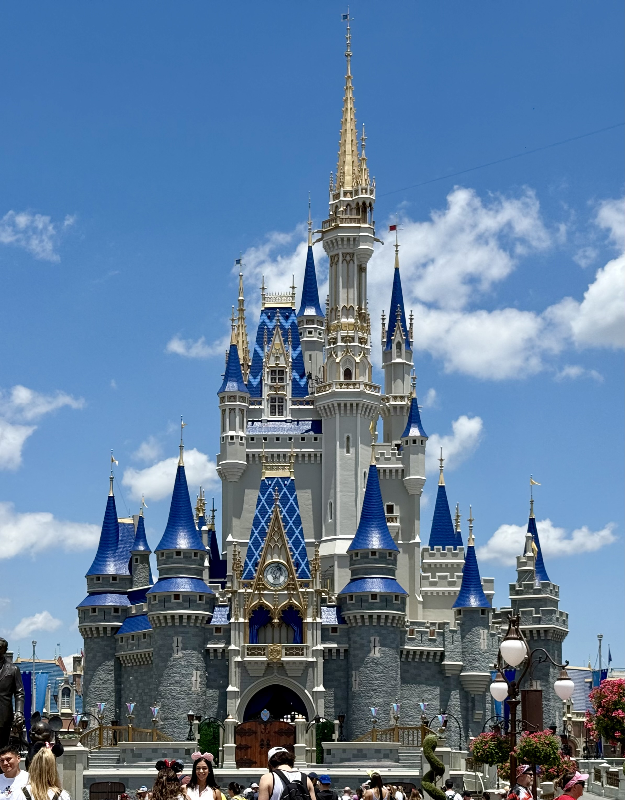
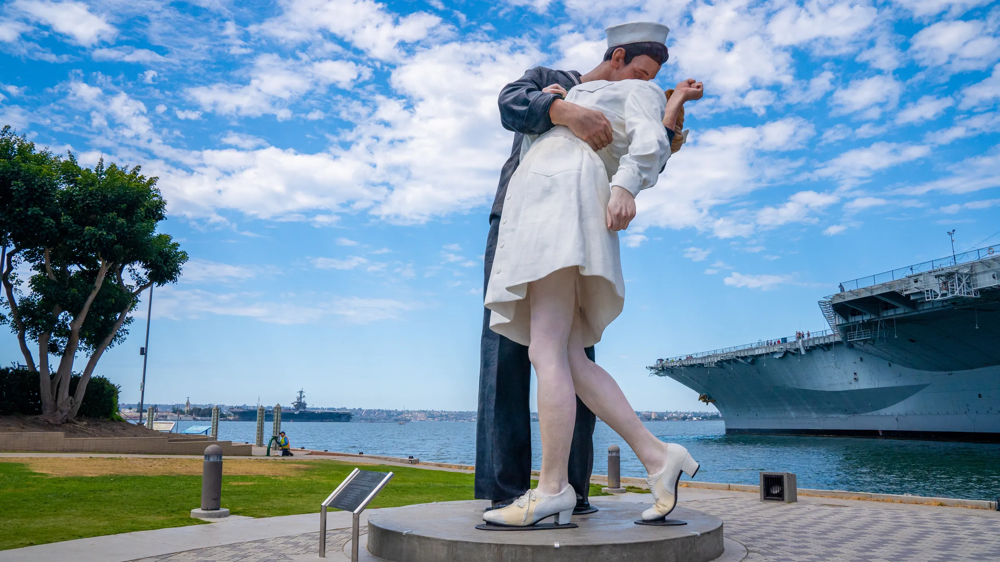
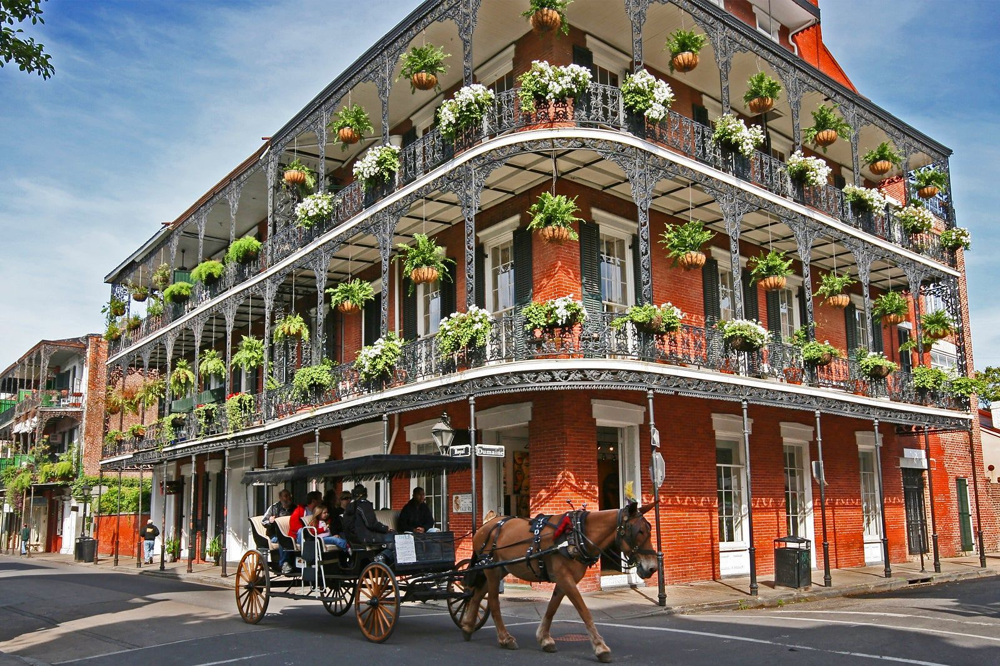
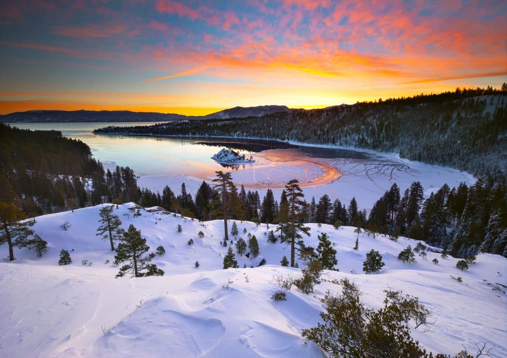

Places I Have Traveled
This is a collection of places I have traveled and enjoyed. Each location stands out for a different reason, whether it was the food, scenery, weather, entertainment, or just getting away from the normal routine. This collection also uses responsive design so the cards adjust across mobile, tablet, and desktop screen sizes.

Disney World
Orlando, Florida
Disney World stands out because of the rides, parks, food, and the amount of detail built into everything. It is one of those trips where there is always something else to see or do.

San Diego
California Coast
San Diego is one of my favorite cities because it has great weather, beaches, food, and a relaxed feel. It is the kind of place that is easy to enjoy even on a short trip.

New Orleans
Louisiana
New Orleans has a unique personality with its music, food, history, and architecture. The city feels different from almost anywhere else and makes a strong impression.

Lake Tahoe
California and Nevada
Lake Tahoe is memorable because of the mountain views, clear water, and outdoor activities. It is a great place for scenery, relaxing, and getting away from normal routines.

Seattle
Washington
Seattle was a fun trip because of the waterfront, coffee, food, and views around the city. It has a mix of city energy and natural scenery that makes it interesting to explore.

Jamaica
Caribbean
Jamaica stands out because of the beaches, warm weather, food, and slower pace. It is the kind of trip that feels completely different from everyday life.